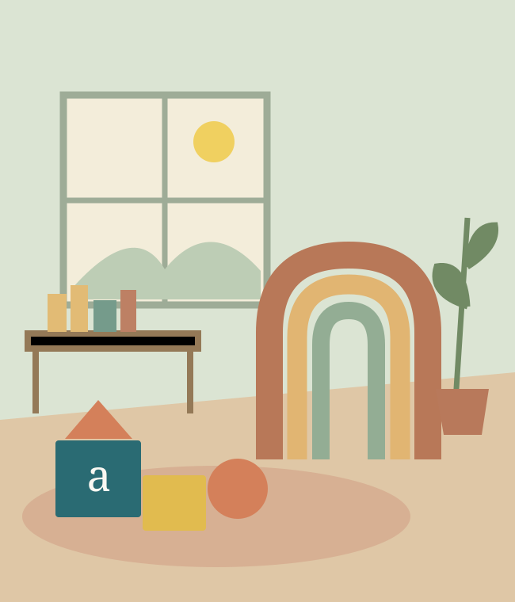

6 WEEKS–18 MONTHS
Babies
Gentle rhythms, sensory discoveries and time to settle with a familiar key worker.
NURSERY & PRE-SCHOOL · CHISWICK, LONDON
A warm welcome to a world of wonder.
Full and part-time childcare for little explorers from 6 weeks to 5 years. Room to play, make friends and grow at their own pace.

GROWING TOGETHER
6 WEEKS–18 MONTHS
Gentle rhythms, sensory discoveries and time to settle with a familiar key worker.
18 MONTHS–3 YEARS
Growing independence, new words and lots of hands-on, wonderfully messy play.
3–5 YEARS
Curious questions, early friendships and confidence for the next little adventure.
Sensory baskets, songs and soft floor play, with rest and feeding routines discussed individually with parents.
Example activities, adapted to each child. Discuss staffing, settling-in and specific support needs during a visit.
FAMILIAR RHYTHMS, FRESH DISCOVERIES
Time to get muddy. Time to be quiet. Time to try something new.
A sample day, not a fixed timetable for every child.
Settling activities, familiar faces and free play.
Stories, number games, creativity and child-led exploration.
Garden play, nature and movement, weather permitting.
A shared meal. Dietary needs are discussed with each family.
Quiet time and an afternoon of play at each child's pace.
OUR APPROACH
Our concept follows the Early Years Foundation Stage: exploration, conversation and creative play woven into everyday life.
A key-worker approach can help children build familiar relationships. Talk to the team about settling-in, how observations are shared, staffing and individual support.
Fictional nursery concept. Qualifications, inspection status and safeguarding arrangements require direct verification with a real provider.
PLANNING YOUR WEEK
Illustrative fees from the brief. Ask for a written breakdown of meals, extras, hours and funding arrangements.
Explore government childcare support ↗Eligibility and funded hours depend on your circumstances and current rules.
£246 / week
Before any funding. Estimate only; no place or rate is secured.
THE BEST WAY TO GET A FEEL FOR US
Bring your questions and your little one. See the spaces, meet the team and talk about what matters to your family.
Create a visit discussion plan. No appointment is made and no information leaves your browser.